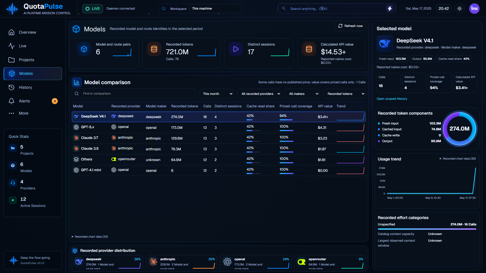

Validation and open requirements · Earlier all-eight comparison
Models: four first-pass functional sets complete; full repeatability gate remains RED around the token ring. Projects: current four-pair gate passes. These are isolated real-API fixture captures, not whole-design approval.
